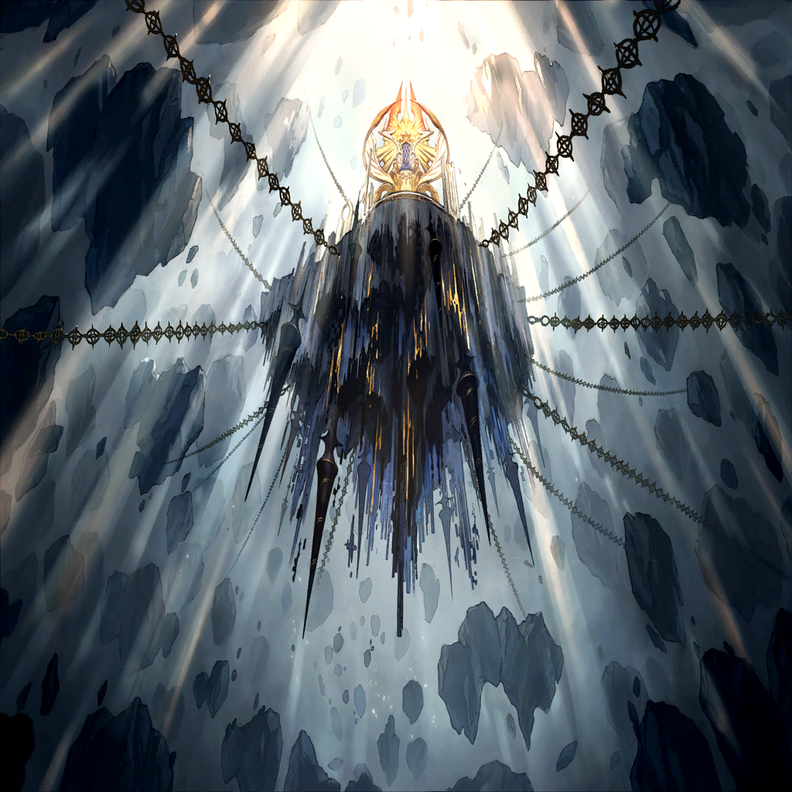

|
|  |
| 傲慢の罪竜 |
オォォォォォ!! |
| ニドヘガル |
竜殺しの理法すら、弾く…!?
もはや竜ですらないというのか、
オピネウス…！ |

ザフィリス |
マギルの出力が、上がっている…
これは、嫉妬の層で相対した
罪竜となったリンドレイク以上の…！ |
| 傲慢の罪竜 |
俺に宿る楔は、ウロボロスの欠片
つまりこの身は奴の一部でもある |
| 傲慢の罪竜 |
竜殺しの理法による停止命令は、
ウロボロスには通じない
であれば、我が身にも通じぬのは道理だ |
| ローレアム |
だったら、その足場を斬る…！
いくらなんでも、竜界さえなくなれば
その規模のマギルは纏えない…！ |
| 傲慢の罪竜 |
させると思うか？ |
| ローレアム |
え？ きゃぁっ!? |
| ローレアム |
赤の剣が…！ |
| 傲慢の罪竜 |
これが、
リンドレイクが造り上げた竜罰の剣か
厄介ではあるが…使い手がその様ではな |
サリア |
…っ |
| 傲慢の罪竜 |
―――― |
サリア |
やっぱり私の武器じゃ、傷もつかない… |
| 傲慢の罪竜 |
人の子か
特別な力など何も持たぬように見えるが…
だからこそ、警戒に値する |
サリア |
うわっ、こっち向いたっ!? |
| 傲慢の罪竜 |
人は、決して諦めぬ
人は、決して弁えぬ
だからこそ、恐ろしい生き物である |
| 傲慢の罪竜 |
次代たる人の子の命を奪う罪
何度繰り返そうと慣れぬものだが…
これも、創世の為―― |
サリア |
…ひゃっ |
|
|
メサルティム |
遅れたが、間に合ったようだ |
サリア |
メサルティム…！ |
メサルティム |
だけではないぞ
そうだろう、勤勉の竜 |
シュメイア |
ああ、もちろんだとも…！ |
| 傲慢の罪竜 |
前に出てきたか、勤勉
ならば貴様も、我が一部に―― |
シュメイア |
いやいや、さすがに御免だね！
そういう雑な融合は
多様性が損なわれるから…！ |
サリア |
いや、そういう問題ですか!? |

クェンス |
…ワギナオ！
なんとか俺が奴の動きを止める
その隙に―― |
| リル |
わぎ…！ |

ワギナオ |
ああ！
リル、お前の分のマギルも借りるぞ！ |
ワギナオ |
“我は至高に希う――” |
ワギナオ |
（…この罪竜という存在が、
俺たちの時代の罪獣と同じならば…！） |
ワギナオ |
竜殺しの剣よ
その刀身に罪を剥がす理法はなくとも―― |
ワギナオ |
その名の示す通りに！
竜の鱗、今一度断ってみせろ…!! |
ワギナオ |
効いた…!? |
| 傲慢の罪竜 |
やはり、貴様は“違う”
その術。その武器。その戦術―― |
| 傲慢の罪竜 |
貴様、この時代の人間ではないな？ |
ワギナオ |
…なッ！
肉に食い込んだ剣を、
そのまま呑み込んでいく…!? |
| 傲慢の罪竜 |
貴様は、危険だ
ゆえに最優先で排除する |
| リル |
わ、ひゃ…!? |
ワギナオ |
く…っ、“我は至高に希う――”！ |
ワギナオ |
この、穢れの量は…っ
受けきれない…!? |
| リル |
ぁ、や…わぎ―― |
ワギナオ |
っ…！ |
ワギナオ |
（せめて、リルだけでも安全圏に…！） |
| 堕罪者 |
――いや、まずは己の身を守れ |
ワギナオ |
ザフィリス!? お前、今までどこに… |
| リル |
…え？ |
ワギナオ |
（…ッ、しまった。思わず…） |
| 堕罪者 |
案ずるな。その娘に我は見えぬ
――そしてじき、貴様の姿も見えなくなる |
ワギナオ |
は？ 何を言って―― |
ワギナオ |
な…俺の、体が…!? |
| リル |
ぁ…ダメ、わぎ！ 行かない――… |
クェンス |
…ワギナオが消え、た…？
まさか、あの罪竜に喰われたのか!? |
ザフィリス |
…っ！ |
| リル |
ざふぃりす、わぎが、わぎが… |
ザフィリス |
わかっている！
だが、今は…！ |
ザフィリス |
グ、ぅ…!? |
| 傲慢の罪竜 |
ようやく隙を見せたな？
節制の竜ザフィリス |
| 傲慢の罪竜 |
今回の侵攻は、
貴様を誘き出す為のものだった…
最高の竜体。最強の罪竜の雛形 |
ザフィリス |
…狙いは、リルではなく…私だと…？ |
| 傲慢の罪竜 |
貴様を取り込むことで、
この七罪統合領域のバランスはすべて、
こちらへと傾く |
| 傲慢の罪竜 |
無論、あの少女は問題だ
だが、エサとしては貴様のほうが価値がある |
ザフィリス |
ぐ、ぅぁ…！ |
ザフィリス |
体が、動かない…？
全身のマギルが、喰われて…ッ |
ザフィリス |
ァ…あぁぁ…!! |
| リル |
ざ…ざふぃりす…っ!? |